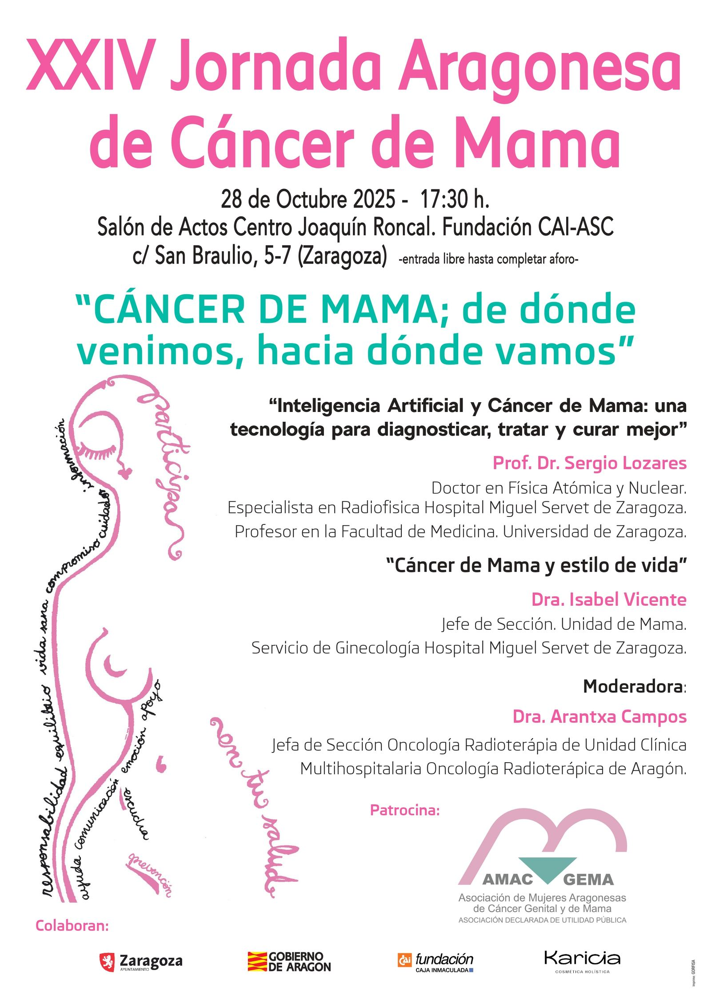
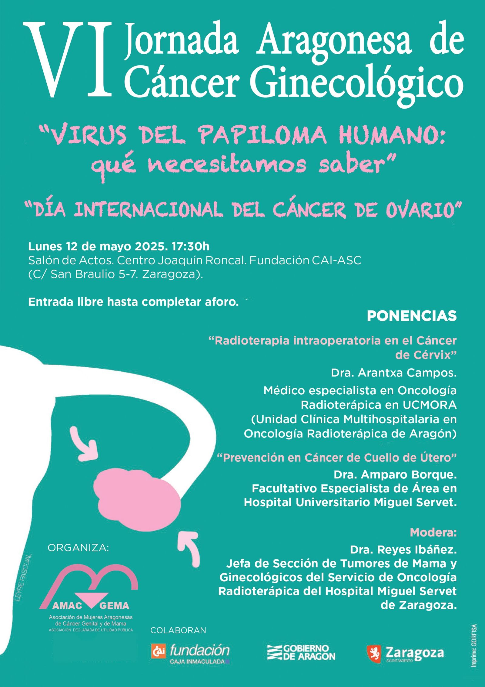

AMAC-GEMA · Zaragoza
No estás sola
Un espacio de escucha, apoyo e información para mujeres afectadas por cáncer genital y de mama, y para quienes las acompañan.
¿Qué necesitas ahora mismo?
Elige el camino que mejor se ajuste a ti. Te acompañamos en cualquiera de ellos.
Hablar con alguien
Escríbenos o llama: te escuchamos y te orientamos sin compromiso.
Contactar →Informarme sobre mi diagnóstico
Información clara sobre cáncer de mama, cáncer ginecológico y sus tratamientos.
Hablando de cáncer →Conocer el acompañamiento
Ayuda profesional, testimonial y actividades guiadas, todo en un mismo lugar.
Qué hacemos →«El apoyo entre iguales no sustituye a la atención profesional: la complementa con escucha, cercanía y la posibilidad de hablar con quien comprende parte de lo vivido.»
Proyectos y acciones destacadas
Iniciativas que muestran cómo el acompañamiento también se construye desde la educación, la cultura y la participación comunitaria.

Divulgación
Jornadas Aragonesas de Cáncer de Mama
Cada octubre, especialistas de Aragón explican los avances en cáncer de mama a pacientes, familias y ciudadanía.
Leer proyecto →
Divulgación
Jornada Aragonesa de Cáncer Ginecológico
Cada mayo, una jornada abierta sobre prevención y tratamiento del cáncer ginecológico.
Leer proyecto →
Solidaridad
Marcha por la Salud
Una andada popular de unos 3 km por el Parque Labordeta. En 2025 nos juntamos unas 600 personas.
Leer proyecto →Conoce AMAC-GEMA
Desde 1994, ofrecemos a las mujeres aragonesas afectadas por cáncer genital y de mama, y a sus familias, un espacio de apoyo y una atención biopsicosocial: cuidamos el cuerpo, las emociones y la vida cotidiana, con un equipo profesional y voluntarias que han pasado por lo mismo.
Somos una asociación de utilidad pública desde 2015 y, desde 2018, Hija Predilecta de la ciudad de Zaragoza.
Nuestra asociaciónTu primer paso puede ser sencillo
Escríbenos si necesitas orientación o quieres saber cómo participar.
Contactar- +30años acompañando
- +2.000personas asociadas
- +50voluntarias activas
- 428visitas en hospitales en 2025
¿Quieres sumarte tú?
Si no necesitas apoyo pero quieres colaborar, esto es para ti: tu tiempo, tus ideas o tu ayuda periódica hacen posible que sigamos acompañando.
Apoyo periódico
Hazte socia
La colaboración periódica aporta estabilidad y continuidad a los proyectos y servicios de la asociación.
Ver detalles para asociarse →Acción solidaria
Participa como voluntaria
Comparte tu tiempo, ilusión y habilidades en iniciativas que fortalecen la comunidad.
Ver detalles de voluntariado →Sensibilización
Difunde nuestra labor
Hablar de AMAC-GEMA en tu entorno y redes sociales ayuda a que más mujeres puedan encontrarnos.
Ver cómo difundir →Súmate a AMAC-GEMA
Con tu ayuda, colaboración o voluntariado, seguimos acompañando a más mujeres cada año.
Cómo ayudar